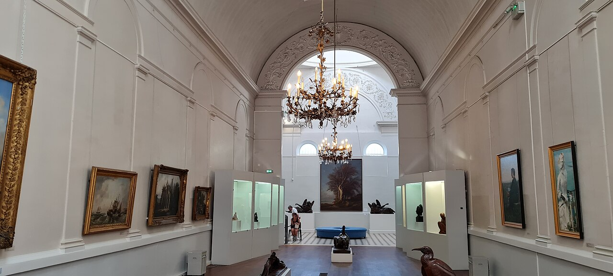
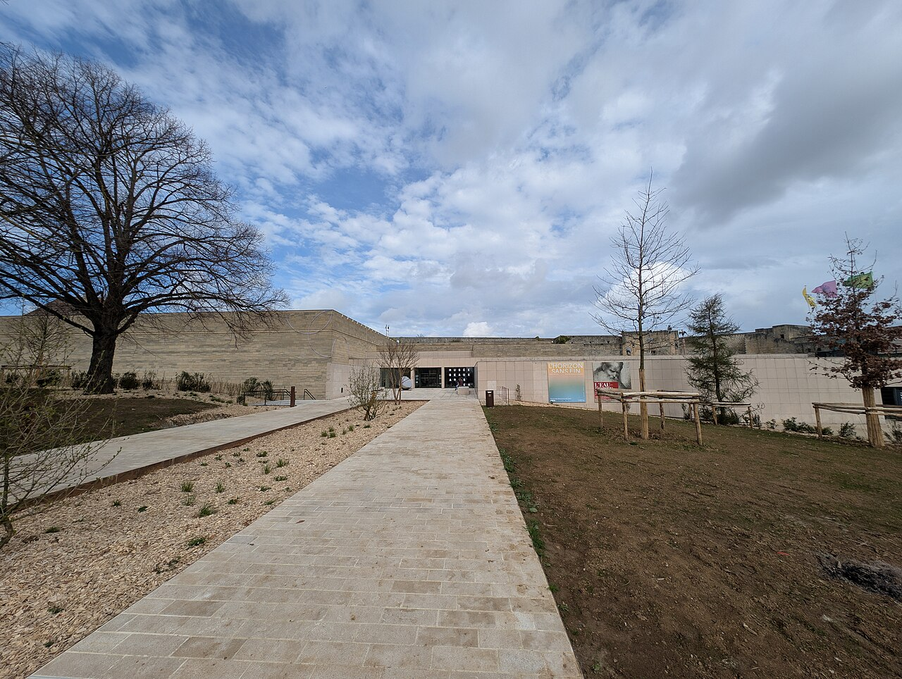
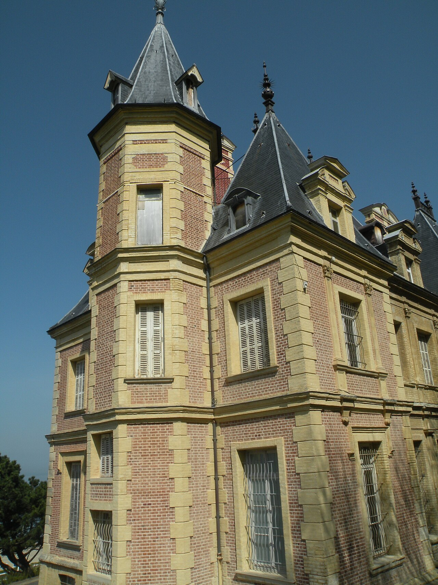
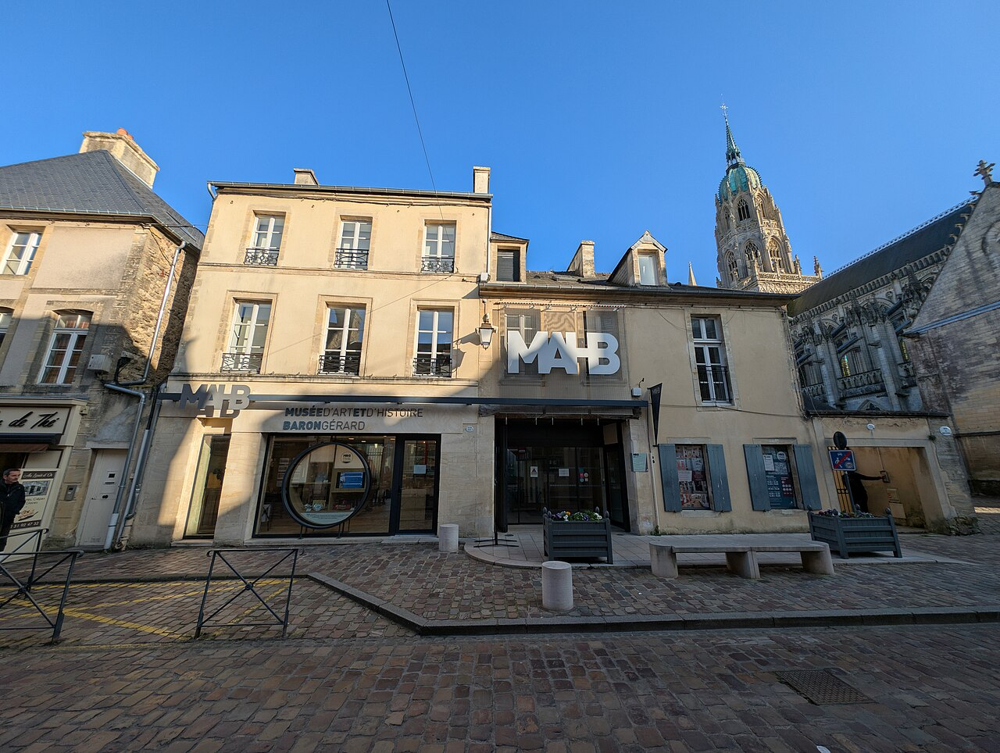
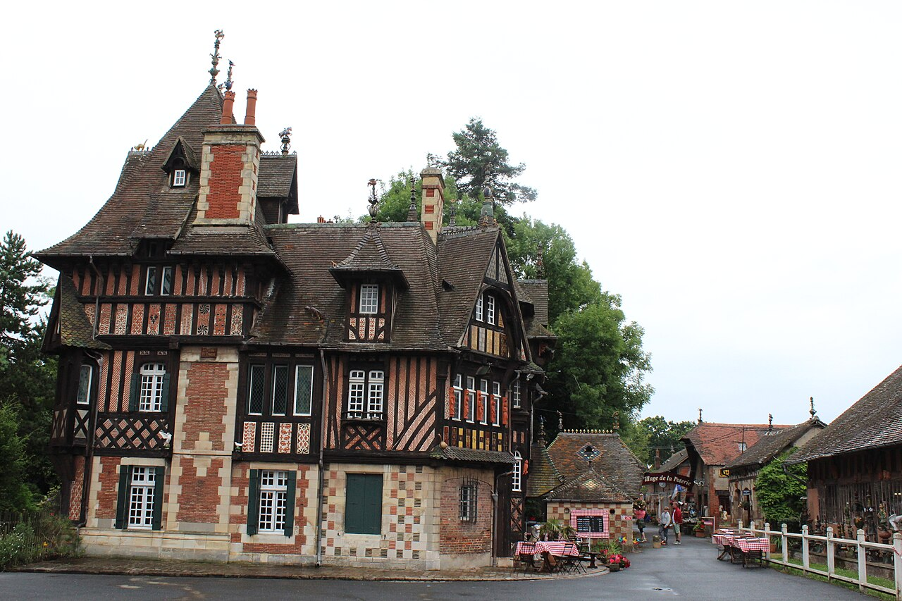
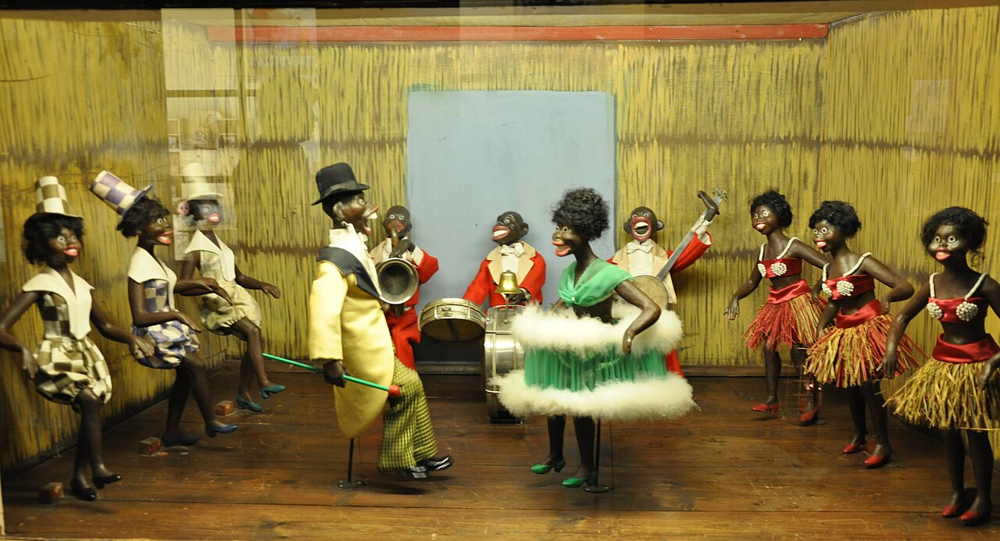
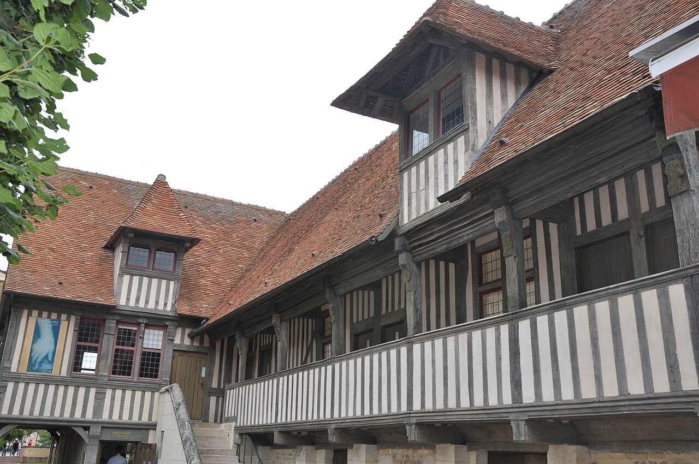

19 lieux référencés
Normandie
L’esplanade et le bâtiment du Mémorial de Caen.Photo : MémorialCaen · Wikimedia Commons · CC BY-SA 4.0 · Redimensionnée, sans recadrage.
Mémorial de Caen
Consulter la fiche du musée →

Normandie
Le portail du musée de la Tapisserie de Bayeux, photographié en 2017.Photo : Avi1111 dr. avishai teicher · Wikimedia Commons · CC BY-SA 4.0 · Redimensionnée, sans recadrage.
Musée de la Tapisserie de Bayeux
Consulter la fiche du musée →

NormandieUne salle du musée Eugène-Boudin à Honfleur, photographiée en 2024.Photo : Derbrauni · Wikimedia Commons · CC BY 4.0 · Redimensionnée, sans recadrage.
Musée Eugène-Boudin
Consulter la fiche du musée →


NormandieL’entrée du musée des Beaux-Arts de Caen, dans l’enceinte du château.Photo : Andy Li · Wikimedia Commons · CC0 · Redimensionnée, sans recadrage.
Musée des Beaux-Arts de Caen
Consulter la fiche du musée →


Normandie
Le logis des Gouverneurs, qui abrite le musée de Normandie à Caen.Photo : Karldupart · Wikimedia Commons · CC BY-SA 4.0 · Redimensionnée, sans recadrage.
Musée de Normandie
Consulter la fiche du musée →

Normandie
La maison à pans de bois du musée d’Art et d’Histoire de Lisieux.Photo : Chatsam · Wikimedia Commons · CC BY-SA 3.0 · Redimensionnée, sans recadrage.
Musée d'art et d'histoire de Lisieux
Consulter la fiche du musée →

NormandieLa façade sud-ouest de la villa Montebello, à Trouville-sur-Mer.Photo : Pymouss · Wikimedia Commons · CC BY-SA 3.0 · Redimensionnée, sans recadrage.
Musée Villa Montebello
Consulter la fiche du musée →


NormandieL’entrée du musée d’Art et d’Histoire Baron Gérard, à Bayeux.Photo : Andy Li · Wikimedia Commons · CC0 · Redimensionnée, sans recadrage.
Musée d'art et d'histoire Baron Gérard
Consulter la fiche du musée →


Normandie
La Villa du Temps retrouvé, à Cabourg.Photo : Gzen92 · Wikimedia Commons · CC BY-SA 4.0 · Redimensionnée, sans recadrage.
La Villa du Temps retrouvé
Consulter la fiche du musée →
.jpg){kind=link}
Normandie
Un véhicule exposé au musée-mémorial de la Bataille de Normandie, photographié en 2021.Photo : Chabe01 · Wikimedia Commons · CC BY-SA 4.0 · Redimensionnée, sans recadrage.
Musée Mémorial de la Bataille de Normandie
Consulter la fiche du musée →
_-_2021-11-11_-_11.jpg){kind=link}
Normandie
La façade du musée d’Ethnographie à Honfleur, photographiée en 2019.Photo : Miniwark · Wikimedia Commons · CC BY-SA 4.0 · Redimensionnée, sans recadrage.
Musée d’ethnographie et d’art populaire de Honfleur
Consulter la fiche du musée →

Normandie
L’ancienne église Saint-Étienne, qui abrite le musée de la Marine à Honfleur.Photo : Richard N Horne · Wikimedia Commons · CC BY 4.0 · Redimensionnée, sans recadrage.
NormandieMusée de la Marine de Honfleur
Consulter la fiche du musée →
_in_Honfleur,_France,_now_the_Maritime_Museum.jpg){kind=link}
Mémorial de Falaise – Les civils dans la guerre
Consulter la fiche du musée →
Espace-musée Charles Léandre
Consulter la fiche du musée →
NormandieLe manoir de la Poterie du Mesnil de Bavent, photographié en 2016.Photo : Emg63 · Wikimedia Commons · CC BY-SA 4.0 · Redimensionnée, sans recadrage.
NormandieEspace muséal de la Poterie du Mesnil de Bavent
Consulter la fiche du musée →


Le Monde Miniature - Clécy
Consulter la fiche du musée →
NormandieUne scène d’automates du musée de Falaise, photographiée en 2016.Photo : Philippe Alès · Wikimedia Commons · CC BY-SA 4.0 · Redimensionnée, sans recadrage.
NormandieMusée des Automates de Falaise
Consulter la fiche du musée →


Musée du N°4 Commando franco-britannique
Consulter la fiche du musée →
NormandieLe bâtiment des Dominicaines à Pont-l’Évêque, photographié en 2010.Photo : Philippe Alès · Wikimedia Commons · CC BY-SA 3.0 · Redimensionnée, sans recadrage.
Les Dominicaines, centre d'art et artothèque
Consulter la fiche du musée →
